Manual do painel
Como administrar o site
Este é o manual de quem cuida do acervo por trás das telas: como entrar no painel, cadastrar pessoas e famílias, montar o livro, subir fotos e histórias, e ajustar as configurações do site.
Começando
Entrando no painel
O painel fica em /admin, separado do site público. Entre com o e-mail e a senha do seu acesso — se esqueceu a senha, use "Esqueci minha senha" na própria tela de login, que manda um link de redefinição por e-mail.
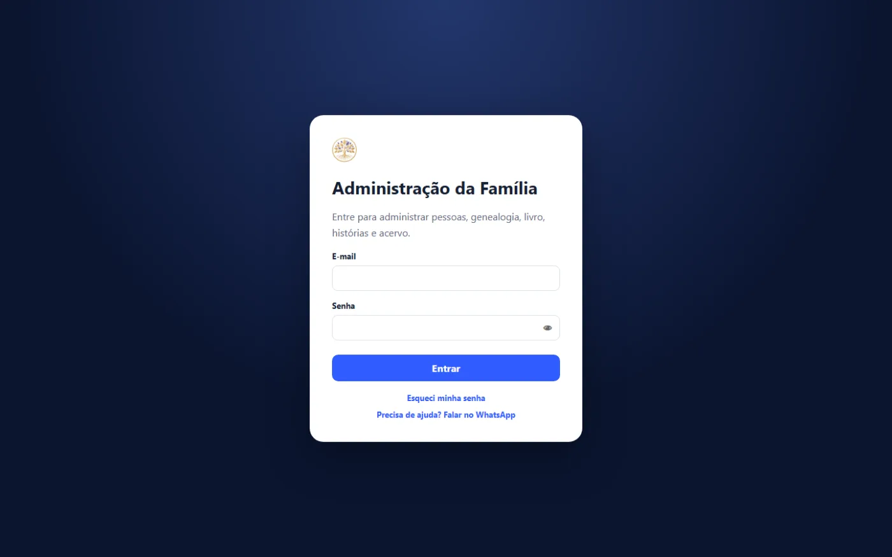
Depois de logado, o painel abre direto no Dashboard: uma visão geral com o total cadastrado em cada seção do acervo (pessoas, famílias, fotos, histórias e assim por diante) e o quanto ainda falta pro limite do seu plano.
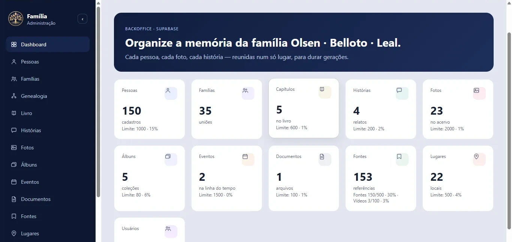
Tutorial completo
Pessoas, passo a passo
Pessoas é o coração do acervo — praticamente tudo (famílias, histórias, fotos, eventos) se conecta a uma pessoa cadastrada aqui. Por isso vale entender esse fluxo com calma: os outros cadastros funcionam de um jeito bem parecido.
Pessoas · Lista
A lista de pessoas cadastradas
No menu lateral, clique em Pessoas. A lista mostra nome, nascimento, falecimento e status de cada uma. Use a busca por nome pra achar rápido, e o botão + Nova pessoa, no canto superior direito, pra começar um cadastro novo.
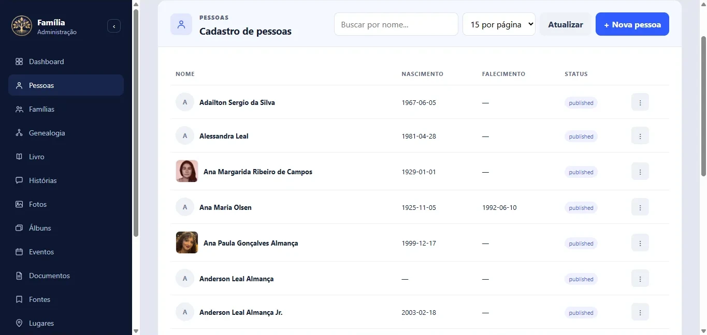
Pessoas · Novo cadastro
Preenchendo os dados
O formulário de "Nova pessoa" abre em uma janela. Os campos de cima são os essenciais:
- Nome e Sobrenome — os dois formam o nome completo exibido no site. Só o Nome é obrigatório.
- Apelido — opcional, pra quem é mais conhecido por um apelido do que pelo nome.
- Data de nascimento e Data de falecimento — se a pessoa for viva, deixe a segunda em branco.
- Gênero e Vivo(a) ou falecido(a) — os dois são obrigatórios e entram na biografia automática (explicada mais abaixo).
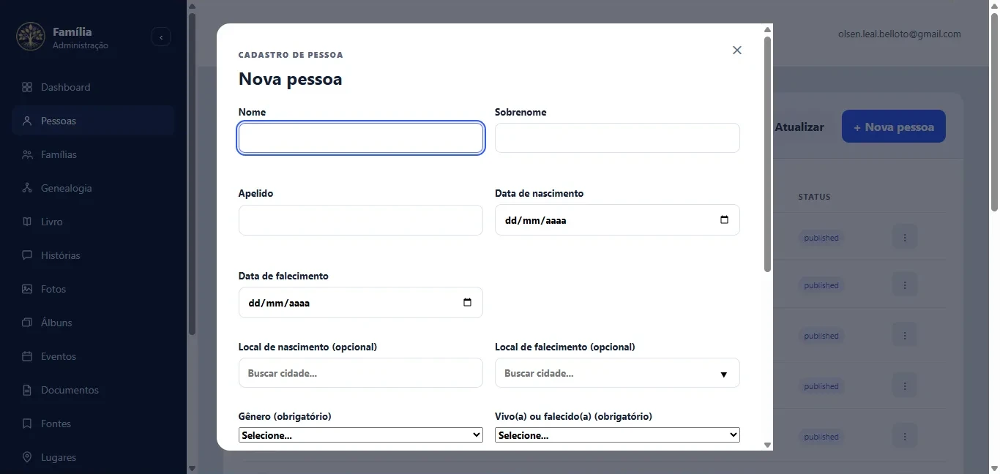
Pessoas · Novo cadastro
Local, foto e biografia
- Local de nascimento e Local de falecimento — opcionais. Comece a digitar o nome de uma cidade já cadastrada em Lugares; se não encontrar, você pode cadastrar o lugar na hora.
- Foto de perfil — opcional. Aparece na árvore genealógica e na listagem; sem foto, mostra as iniciais do nome.
- Biografia (complemento manual) — um texto livre pra histórias, curiosidades e memórias que não vêm dos dados cadastrais.
- Publicar no site — marcado por padrão. Desmarque se quiser guardar o cadastro sem mostrá-lo publicamente ainda.
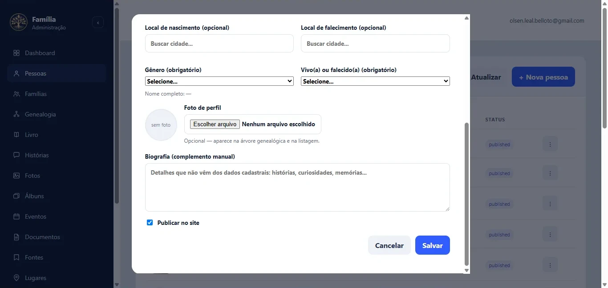
Clique em Salvar pra concluir. A pessoa já aparece na lista na hora.
Pessoas · Ações
Editando ou excluindo alguém
Em cada linha da lista, o menu ⋮ (à direita) abre as ações disponíveis: Editar e Excluir. Esse mesmo menu de três pontinhos se repete em todas as listagens do painel — é sempre por ali que se edita ou apaga um registro.
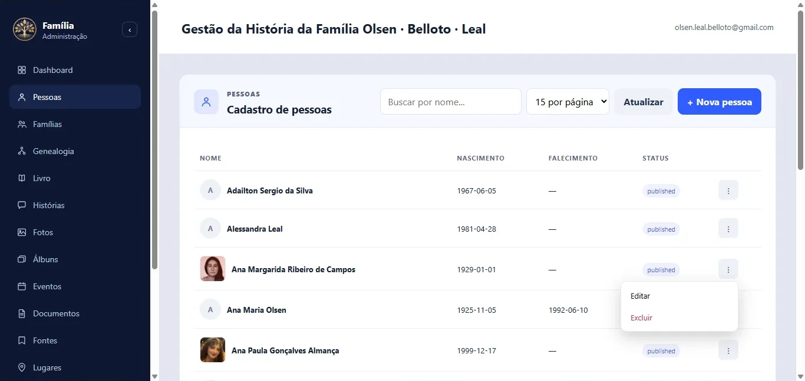
Pessoas · Editar
O formulário de edição é o mesmo de cadastro
Clicando em Editar, a mesma janela de "Nova pessoa" abre preenchida com os dados atuais — agora com o título "Editar pessoa". Mude o que precisar e salve.
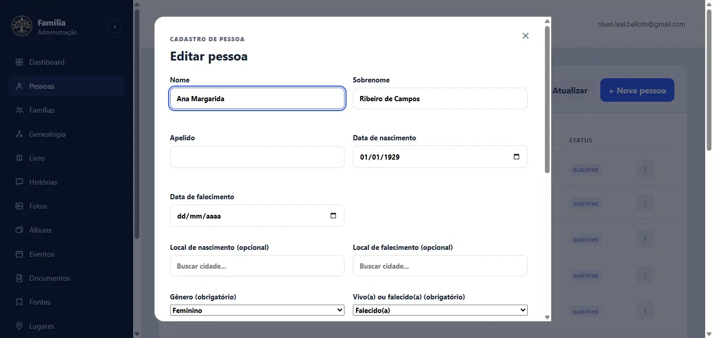
Pessoas · Biografia automática
Um texto que se escreve sozinho
Rolando a edição pra baixo, aparece a pré-visualização automática: um parágrafo montado sozinho a partir dos dados cadastrados (nascimento, pais, casamento, filhos, falecimento). É esse texto — mais o que você escrever no campo "Biografia (complemento manual)" — que forma o perfil público da pessoa no site.
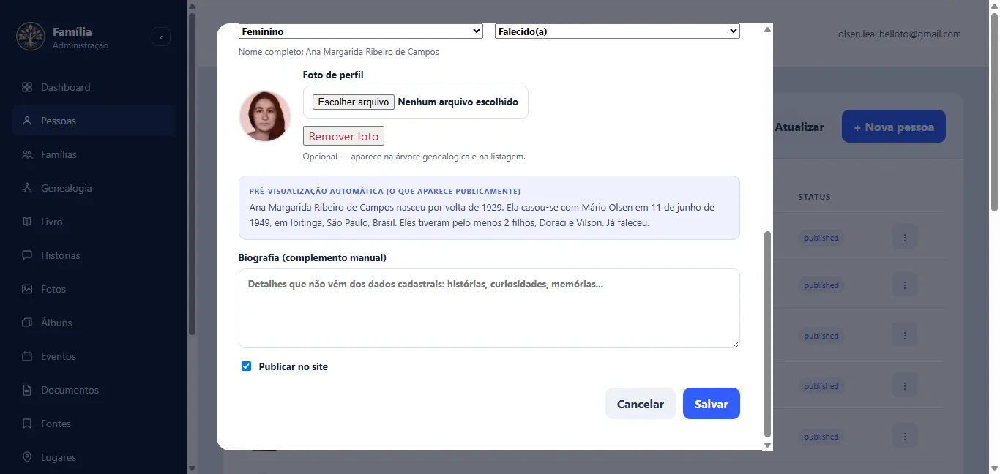
Por isso, quanto mais completos os cadastros de família (união, filhos) e datas, mais rica fica a biografia automática — sem precisar escrever nada a mais.
Pessoas · Excluir
Excluindo com segurança
Ao clicar em Excluir, um aviso confirma a ação e lembra que histórias, fotos, eventos e relações de parentesco vinculados àquela pessoa também podem ser afetados. Essa confirmação existe em toda ação de excluir no painel — e nenhuma delas pode ser desfeita depois.
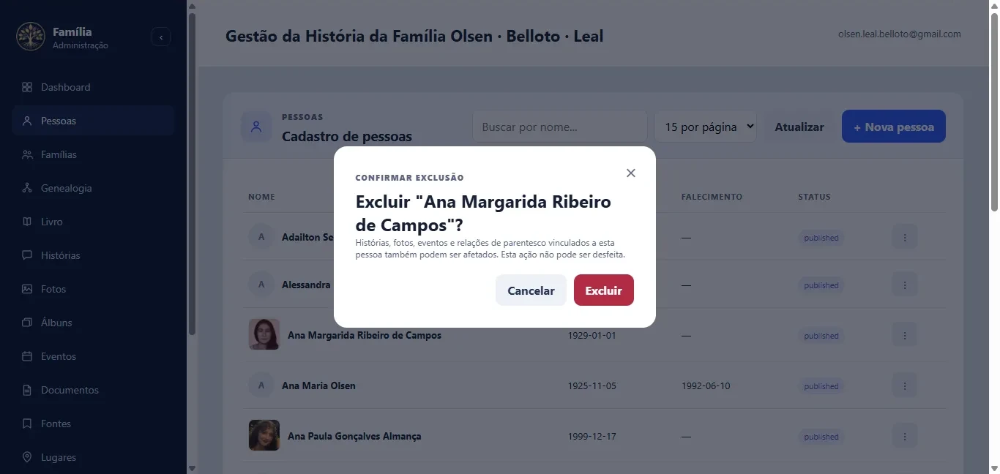
Referência rápida
As outras seções do acervo
O resto do painel segue o mesmo padrão de Pessoas: uma lista com busca, um botão pra criar, o menu ⋮ pra editar ou excluir. Aqui vai o que cada seção cadastra e o que tem de especial em cada uma.
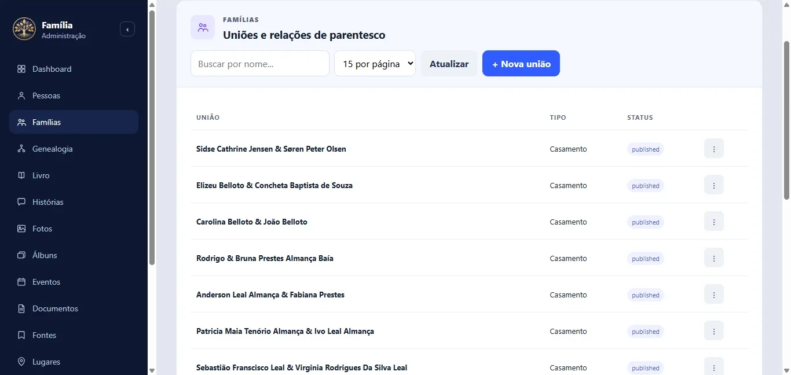
Famílias
Uniões e filhos
Cada linha é uma união entre duas pessoas já cadastradas (Pessoa A e Pessoa B), com tipo (casamento, união estável...), datas de início e fim, e observações.
No menu ⋮ de cada união tem uma terceira opção além de Editar/Excluir: Filhos — abre uma janela pra vincular os filhos daquela união, buscando pelo nome de uma pessoa já cadastrada.
É essa teia de uniões e filhos que desenha a árvore genealógica automaticamente.
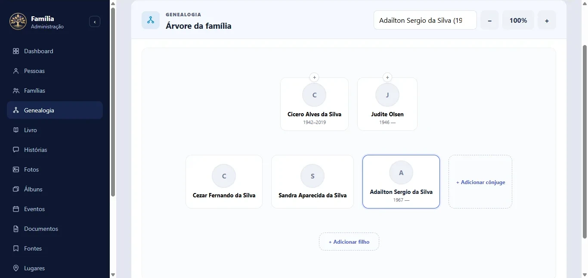
Genealogia
A árvore, de forma visual
Não é bem um cadastro — é a árvore genealógica renderizada a partir dos dados de Pessoas e Famílias, com busca por nome, zoom e navegação clicando de pessoa em pessoa.
Dá pra adicionar cônjuge ou filho direto por aqui também, com os botões + Adicionar cônjuge e + Adicionar filho que aparecem ao lado de cada pessoa — um atalho pro mesmo cadastro de Famílias.
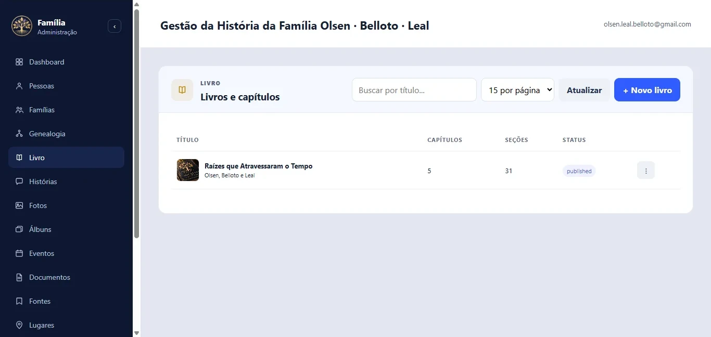
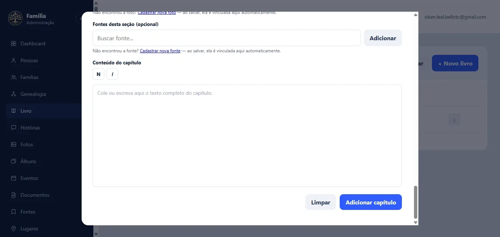
Livro
Capítulos e seções, em texto corrido
Um livro tem capítulos, e cada capítulo tem uma ou mais seções de texto. Clicando no livro da lista, abre o índice de capítulos e seções já escritas — cada uma com seu próprio menu ⋮.
Ao adicionar uma seção nova, o editor de texto tem formatação simples (negrito, itálico) e permite vincular fotos e fontes que já existem no acervo — elas passam a aparecer ilustrando aquele trecho do livro.
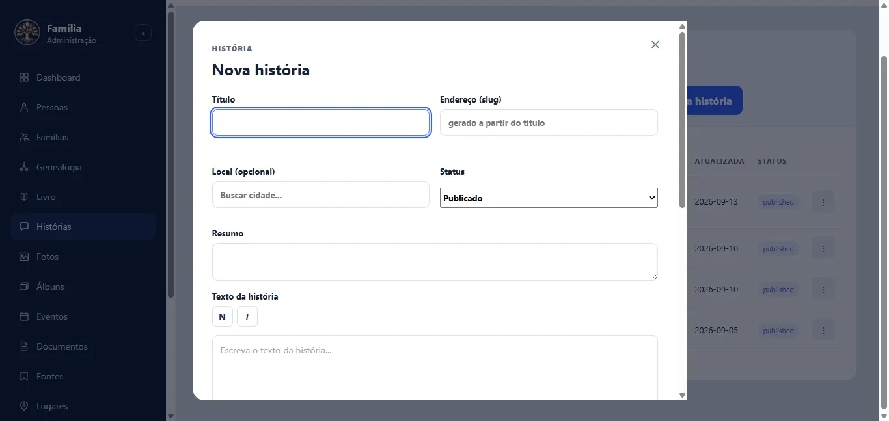
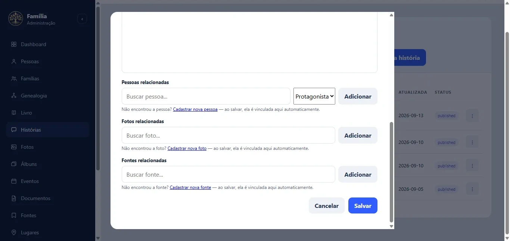
Histórias
Relatos, causos e memórias
Título, local, um resumo curto e o texto completo da história. O endereço (slug) é gerado sozinho a partir do título, mas pode ser ajustado.
Mais abaixo dá pra vincular pessoas relacionadas (marcando o papel de cada uma, como "Protagonista"), fotos relacionadas e fontes relacionadas — buscando pelo que já existe, ou cadastrando um item novo sem sair da janela.
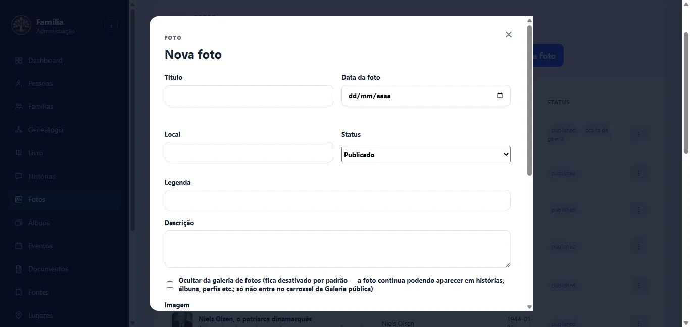
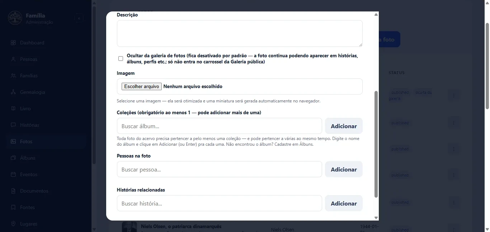
Fotos
O arquivo fotográfico
Título, data, local, legenda e descrição, além da própria imagem — que é otimizada automaticamente ao enviar. Toda foto precisa pertencer a pelo menos uma coleção (um álbum já cadastrado em Álbuns).
Dá pra marcar quem aparece na foto (Pessoas na foto) e quais histórias se relacionam a ela. O checkbox "Ocultar da galeria de fotos" tira a foto do carrossel público sem apagá-la — ela continua podendo aparecer em perfis e histórias.
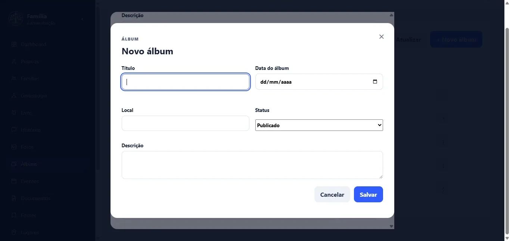
Álbuns
As coleções que organizam as fotos
Título, data, local e descrição de uma coleção. Cadastre o álbum primeiro — depois, ao subir fotos, é nele que elas vão entrar.
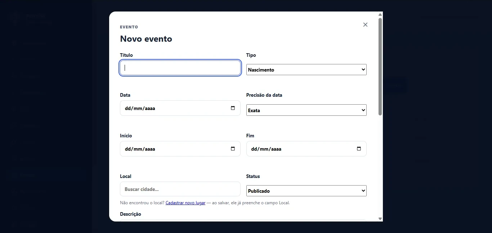
Eventos
Os marcos da linha do tempo
Título, tipo (nascimento, casamento, migração e outros), data (com a opção de marcar se é exata ou aproximada) e, se for um período, início e fim.
É o cadastro de Eventos que alimenta a Linha do tempo pública do site, em ordem cronológica.
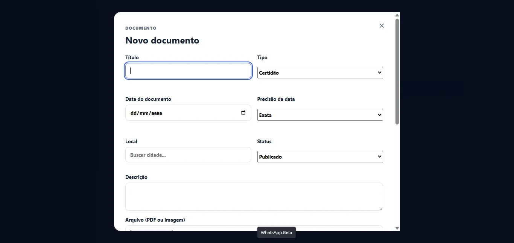
Documentos
Certidões, cartas e arquivos digitalizados
Título, tipo (certidão e outros), data do documento (exata ou aproximada), local e o próprio arquivo — aceita PDF ou imagem.
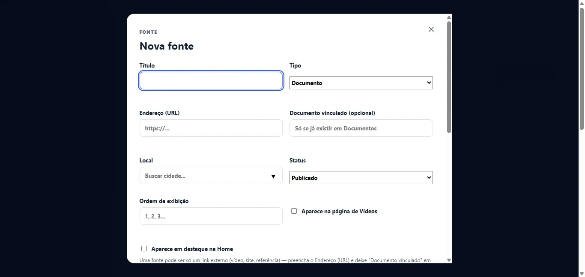
Fontes
Referências, links e vídeos
Uma fonte pode ser um link externo (vídeo, site, referência) — basta preencher o Endereço (URL) — ou apontar pra um documento já cadastrado em Documentos.
Os checkboxes "Aparece na página de Vídeos" e "Aparece em destaque na Home" controlam se aquela fonte some publicamente em destaque, além de ficar disponível pra vincular em histórias e capítulos do livro.
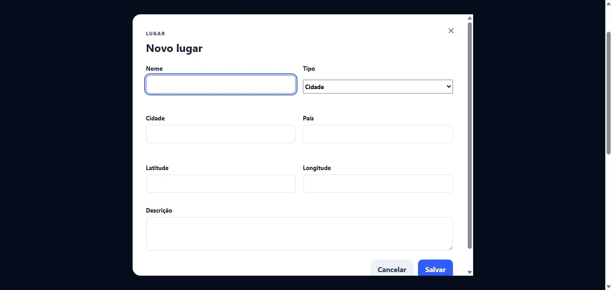
Lugares
As cidades e locais do acervo
Nome, tipo (cidade e outros), cidade, país, coordenadas (latitude/longitude, opcionais) e descrição. É essa lista que alimenta os campos de "buscar cidade" espalhados pelo resto do painel — em Pessoas, Histórias, Eventos e Documentos.
Conta e ajustes
Configurações
É aqui que fica tudo que não é conteúdo do acervo em si: quem pode ver o site, a identidade visual e quem tem acesso ao painel.
Configurações · Conta
Sua conta e o acesso ao site
No topo, um resumo da sua conta (e-mail, papel, plano atual). Logo abaixo, o controle de Visibilidade: deixar o site público pra qualquer pessoa, ou restrito só a quem tem um login de visitante cadastrado (seção Usuários).
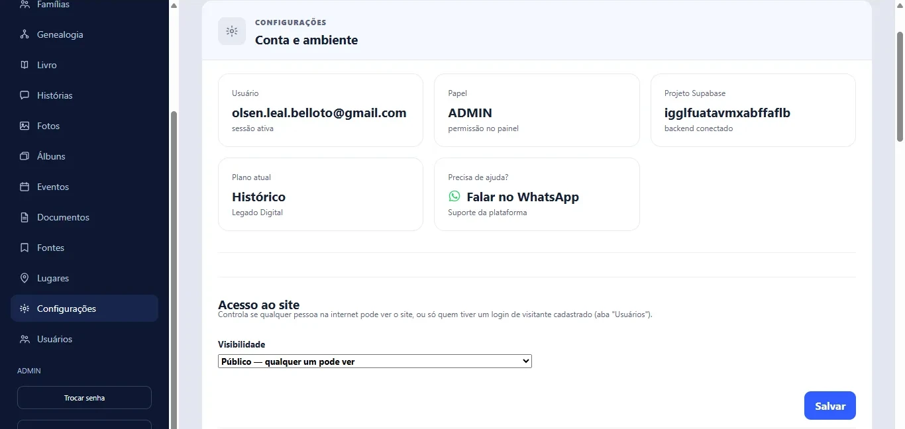
Configurações · Identidade visual
Título, logo, favicon e fotos de capa
O título do site, o número de WhatsApp de contato, o logo (aparece no cabeçalho) e o favicon (ícone da aba do navegador) são todos opcionais — sem eles, o site usa apenas o nome e um ícone padrão.
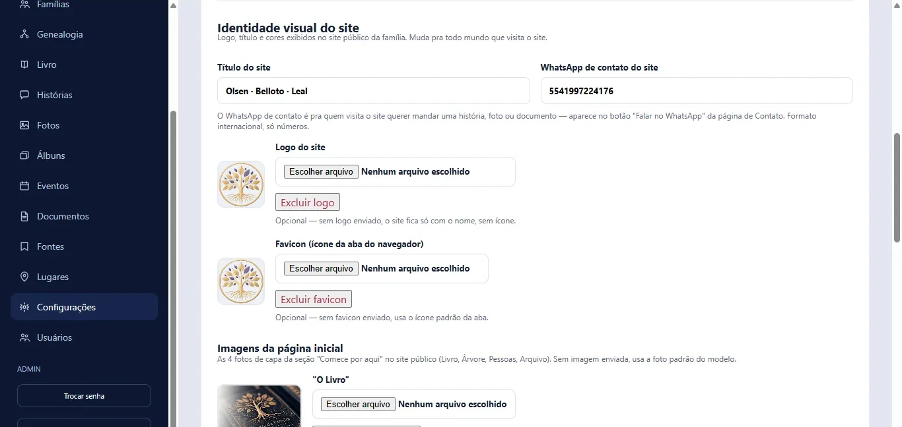
Logo abaixo ficam as 4 fotos de capa da seção "Comece por aqui" da página inicial (Livro, Árvore, Pessoas e Arquivo) — cada uma pode ser trocada por uma imagem própria, ou voltar pra foto padrão do modelo a qualquer momento.
Configurações · Cores
A paleta de cores do site
Escolha um dos modelos prontos ou marque "Personalizado" pra editar cada cor manualmente (fundo, fundo dos cartões, texto, texto secundário e a cor de destaque usada em botões e links). A prévia logo abaixo mostra o resultado antes de salvar.
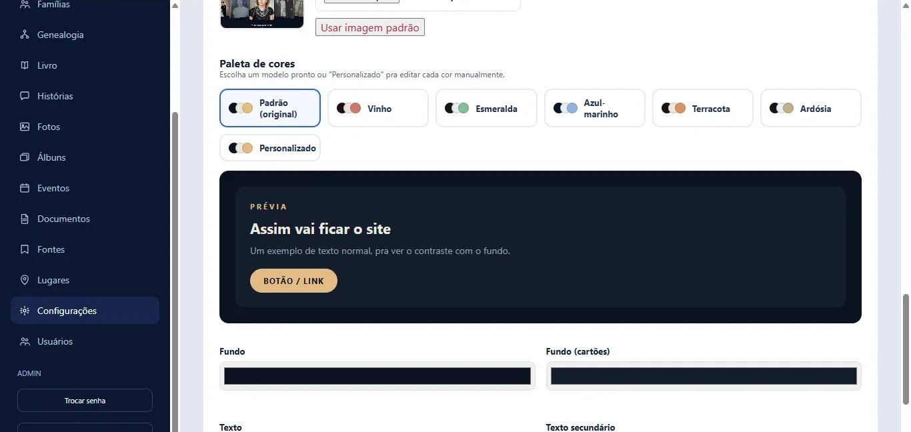
Acessos
Usuários e visitantes
O painel distingue dois tipos de login bem diferentes: quem administra o site (Usuários) e quem só pode vê-lo quando ele estiver marcado como privado (Visitantes).
Usuários
Criando acesso para outro administrador
Em Usuários, o formulário "Criar acesso admin" cadastra outra pessoa com acesso ao painel. Preencha nome, e-mail e uma senha (ou gere uma automática), e escolha entre duas formas de criar:
- Enviar convite por e-mail — manda um link pra pessoa definir a própria senha e ativar o acesso.
- Criar usuário com essa senha — cria o acesso na hora, com a senha que você definiu ou gerou. Útil quando quer passar o login diretamente, sem depender de e-mail.
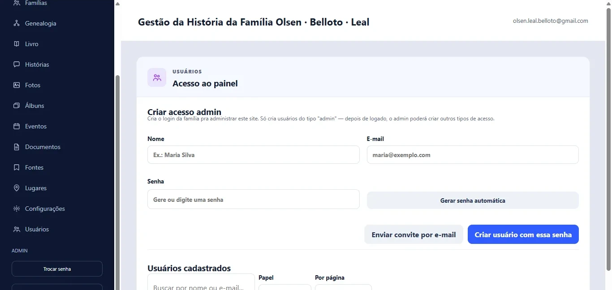
Usuários · Lista e ações
Gerenciando quem já tem acesso
Abaixo do formulário fica a lista de usuários cadastrados, com busca, filtro por papel e paginação. O menu ⋮ de cada linha abre três ações:
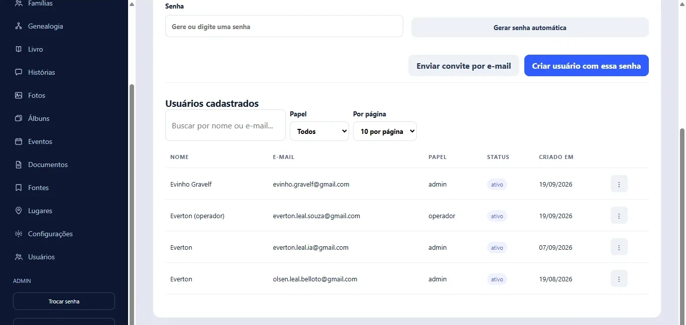
- Desativar (ou Ativar) — bloqueia o login sem excluir o cadastro. Reversível a qualquer momento.
- Reset de senha por e-mail — manda um link pra pessoa escolher uma senha nova.
- Definir senha temporária — você define uma senha na hora, sem depender de e-mail.
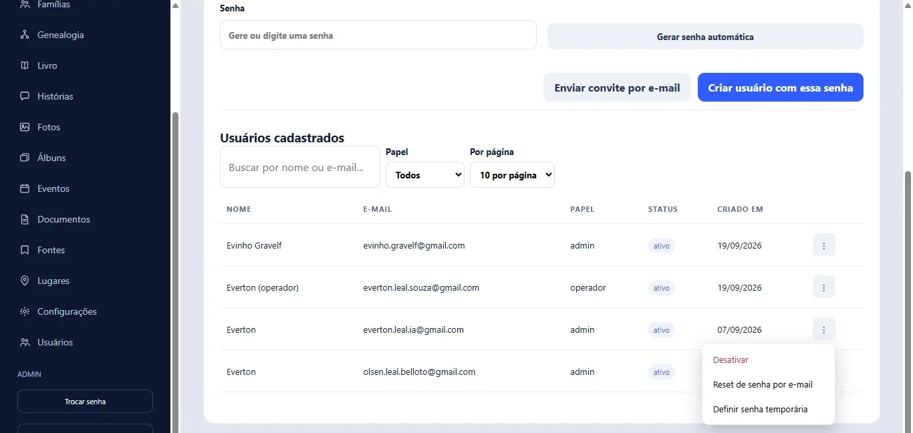
Visitantes
Acesso de leitura, pra quando o site é privado
A aba Usuários também cadastra o acesso de visitante — um login "comum", que só serve pra ver o site quando a Visibilidade estiver marcada como privada em Configurações. Não abre o painel administrativo.
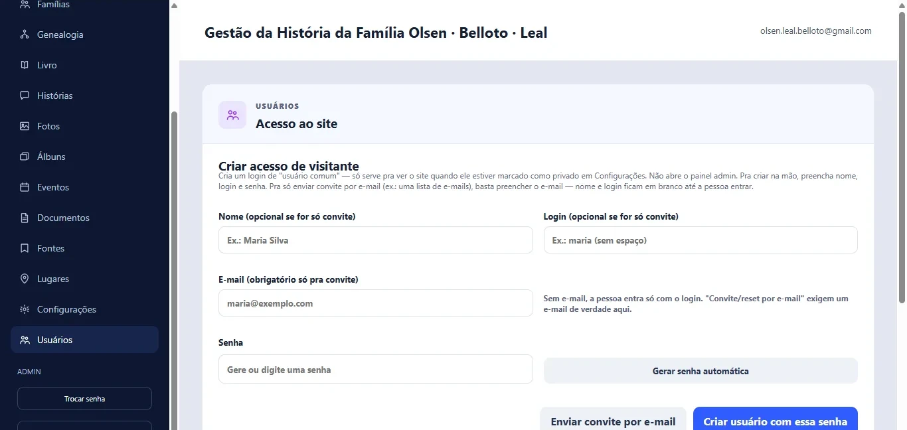
Visitantes · Lista
A lista de visitantes
Mesma lógica de Usuários: lista com busca e paginação, e o menu ⋮ com as mesmas ações de ativar/desativar e redefinir senha.
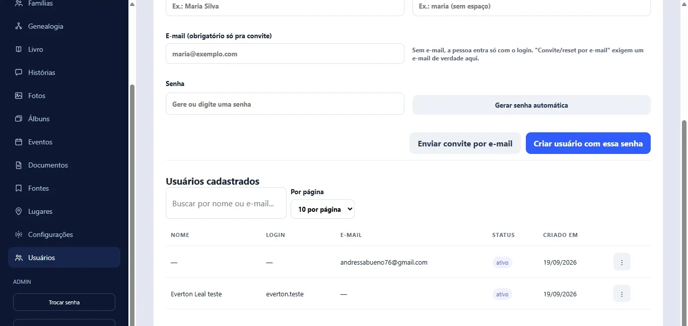
O painel muda aos poucos, conforme o acervo cresce. Se alguma tela parecer um pouco diferente do que está aqui, é sinal de que ela evoluiu desde a última atualização deste manual — o funcionamento no geral continua o mesmo.